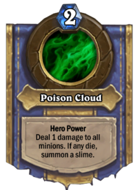

Maldicion Naxxramas Bosses
Maldicion Naxxramas Bosses
Arrabal Arácnido
Anub'Rekhan
El barrio arácnido alberga a nerubianos no muertos, una antigua raza de seres aracnoideos inteligentes. Normalmente muy solitarios y desconfiados de los forasteros, los nerubianos vivientes luchaban valientemente contra la Plaga no muerta, pero estaban abrumados por sus números. Mientras que los nerubianos vivos eran inmunes a la plaga de muertos vivientes, nada podía evitar que el Rey Exánime regresara con los caídos para unirse al Azote en la no muerte. Uno de los súbditos criados por el Rey Exánime fue el Señor de la Cripta Anub'Rekhan. En la vida, era uno de los señores más poderosos de los nerubianos. Ahora, él protege las puertas del Barrio de Arácnidos.
Normal
Heroico
Gran Viuda Faerlina
Fue uno de los miembros de alto rango del Culto de los Malditos bajo Kel'Thuzad, en la muerte ella cría y se ocupa de la cantidad interminable de arácnidos que pululan desde las profundidades de la ciudadela. Un maestro de venenos, ella tiene una gran comprensión de lo que hace sufrir a los mortales.

Normal

Heroico
Maexxna
Maexxna — Nacida en las profundidades de las montañas de Rasgana, hace muchas eras, fue capturada dentro de la aterradora ciudadela de Naxxramas, donde da a luz a su cría, dándoles los cadáveres de todos los que se atreven a adentrarse demasiado en Naxxramas.
Normal
Heroico

Arrabal de la Peste
Noth el Pesteador
Noth el Pesteador fue una vez un mago respetable de Dalaran, que escuchó el llamado del Rey Exánime de la misma manera que lo hizo Kel'Thuzad. También impulsado por el poder, aceptó la convocatoria para servir a las necesidades de la Plaga con sus habilidades en la nigromancia y el tejido de la maldición. Sin embargo, cuando Noth vio que la Tercera Guerra estaba tomando numerosas vidas inocentes, comenzó a adivinar su decisión de unirse a Kel'Thuzad. Kel'Thuzad se ocupó rápidamente de la creciente compasión de Noth al congelar el corazón vivo en el cofre de Noth

Normal

Heroico

Heigan el Inmundo
Observen, Heigan el Inmundo. La mente maestra detrás de los calderos de peste que convirtieron el desierto de Azeroth en las Tierras de la Peste. Se dice que Heigan ha amañado las mismas paredes y suelos de Naxxramas con una gran variedad de trampas, que puede disparar a voluntad.

Normal

Heroic

Loatheb
Loatheb. El espantoso resultado de fusionar la plaga viviente de las Tierras de la Peste con las bestias pantanosas de Azeroth, se dice que Loatheb controla el poder de la curación.

Normal
Heroico
Arrabal Militar
Instructor Razuvious
El Instructor Razuvious es el entrenador de los Caballeros de la Muerte, el más feroz y el más fiel de los servidores del Rey Exánime. Sus ataques son seguros y mortales, y se rumorea que solo los estudiantes bajo su tutela pueden soportar incluso un solo golpe de su mortal espada rúnica. Se dice que su propia técnica es tan potente que solo un discípulo suyo podría resistir su poder.

Normal
Heroic

Gothik el Cosechador
Gothik el Cosechador, maestro de la nigromancia, les enseña a los jóvenes Caballeros de la Muerte el poder de convocar a los muertos vivientes para que los ayuden. Incluso el Caballero de la Muerte más novato puede llamar a los sin vida de sus tumbas, gracias a las técnicas oscuras y siniestras de Gothik. Fantasmas, ghouls, esqueletos, ninguno está a salvo de la influencia de Gothik.

Normal

Heroico
Los Cuatro Jinetes
La guardia real de Kel'Thuzad se puede encontrar en los Cuatro Jinetes, cada uno con sus propios poderes retorcidos a su disposición: Lady Blaumeaux es una maestra de la sombra, capaz de drenar la esencia de la vida de aquellos que encuentra; Thane Korth'azz controla el poder destructivo del fuego e incluso puede invocar meteoritos ardientes desde los cielos; Sir Zeliek fue una vez un paladín, tan poderoso en la vida que todavía puede manejar la Luz en la muerte; y el Barón Rivendare, que una vez fue amigo de Kel'Thuzad, ahora continúa sirviendo a su viejo camarada en la muerte con sus poderes corruptores y el esquelético Deathcharger.
Normal
Heroico
Lady Blaumeux

Thane Korth'azz

Sir Zeliek

Arrabal de los Ensamblajes
Patchwerk
Patchwerk es una de las abominaciones más poderosas de Kel'Thuzad: su fuerza y velocidad sorprenden a quienes pueden enfrentarlo en combate. Lejos de ser un no-muerto perezoso e insensato, Patchwerk usa su inmenso poder para pulverizar cualquier pequeña cosa de carne que pueda enfrentarlo con una ráfaga de ataques potentes y poderosos. Él solo quiere jugar!
Normal and Heroic

Normal

Heroico
Grobbulus
Grobbulus se esconde más profundamente en Construct Quarter, llevando el mismo exudado que fluye a través de Naxxramas dentro de su descomunal forma. Grobbulus es un gigante de la carne, el primero exitoso de su tipo, creado para construir un ejército formidable capaz de propagar rápidamente la plaga de muertos vivientes. Una de las extremidades de Grobbulus ha sido reemplazada por una jeringa, que utiliza para inyectar el limo plaga de Naxxramas en sus enemigos.
Normal
Heroico

Gluth
El perro plaga no-muerto Gluth se sienta obedientemente dentro de Naxxramas, esperando órdenes de sus amos. Ninguna galleta para perros puede satisfacer el hambre voraz de Gluth. Se rumorea que Gluth puede devorar fácilmente un ejército de muertos vivientes a diario, que Gluth usa para unir su propia carne en decadencia.

Normal
Heroico

Thaddius
El último horror descomunal que se encuentra dentro del Construct Quarter es Thaddius. Unida de la carne de los inocentes, esta masiva abominación habita en uno de los laboratorios experimentales de Naxxramas, flanqueado por dos enormes wights: Stalagg y Feugen. Potentes rayos de electricidad atraviesan el laboratorio, sobrealimentando a Thaddius y sus secuaces.

Normal and Heroic

Guarida de la Vermis
Sapphiron
Una vez que uno de los vuelos de vuelo azul de Malygos, Sapphiron fue asesinado por Arthas Menethil y resucitó de entre los muertos para proteger a Kel'Thuzad por toda la eternidad. Al igual que muchos de los vuelos de vuelo azul, Sapphiron tenía un inmenso poder mágico, que solo se magnificó por el hecho de que el Rey Exánime lo resucitó personalmente para servir al Azote. El frío de la escarcha está a su disposición, y usa su magia para defender a Kel'Thuzad a toda costa.
Normal y Heroico

Kel'Thuzad
El Rey Exánime buscó a los individuos más poderosos y ambiciosos de Azeroth para someterse a su voluntad, enviando una convocatoria mental a aquellos que pensó que podrían ser fácilmente influidos por la promesa del poder. Kel'Thuzad fue el primero en responder a la llamada del Rey Exánime. Vio el poder que el Rey Exánime ejercía sobre los no muertos y deseaba ese poder para los suyos, por lo que ofreció sus servicios como mago al Rey Exánime de la forma que deseaba.
"Como mi teniente, obtendrás conocimiento y magia para superar tus sueños más ambiciosos. Pero a cambio, vivo o muerto, me servirás por el resto de tus días. Si me traicionas, te convertiré en uno de mis sueños. sin sentido, y me servirás todavía ".

Normal
Heroico
Fase 1

Fase 2